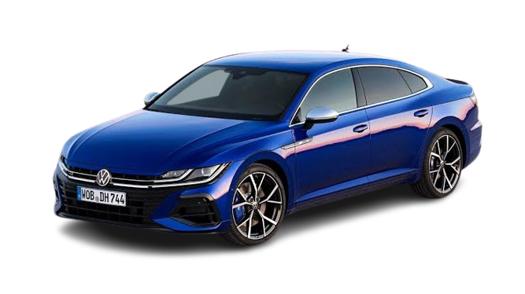
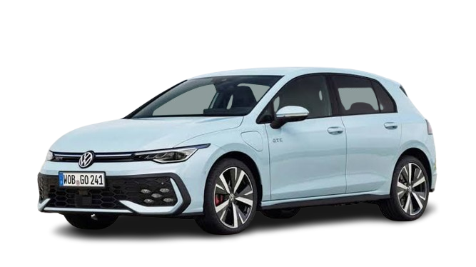
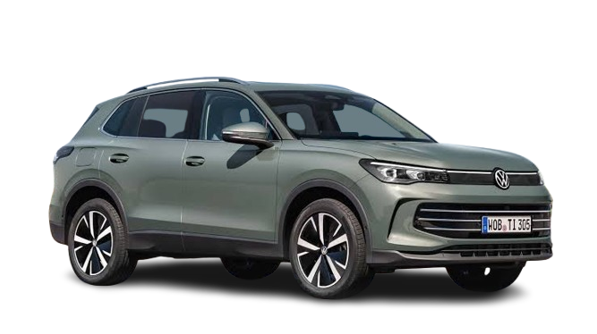

Das Auto · Volkswagen
Три характера.
Три характера.
Один бренд.
Спортивный флагман, эталонный хэтчбек и семейный кроссовер. Выберите модель и сравните их по ключевым параметрам.
3модели
320л.с. максимум
5★Euro NCAP
Мощность моделей
Шкала показывает л.с. относительно самой мощной модели
Arteon R320 л.с.
0–100: 4,9 сМакс.: 250 км/чБензин
Tiguan150 л.с.
0–100: 9,3 сМакс.: 205 км/чДизель
Golf130 л.с.
0–100: 9,1 сМакс.: 213 км/чБензин
Флагман

VW Arteon R
Выпуск с · Бензин 2.0 TSIМощность320 л.с.
0–1004,9 с
Цена≈60 000 €
Подробнее→
Классика

VW Golf
Выпуск с · Бензин 1.5 TSIМощность130 л.с.
0–1009,1 с
Цена≈30 000 €
Подробнее→
Семейный

VW Tiguan
Выпуск с · Дизель 2.0 TDIМощность150 л.с.
0–1009,3 с
Цена≈40 000 €
Подробнее→
VW Arteon R
Заряженный лифтбек с полным приводом. Arteon представлен в , версия R — с 2020 года.
0–100 км/ч4,9 с
Макс. скорость250 км/ч*
Расход8,5 л
Безопасность Euro NCAP (взрослые)
Системы безопасности
- Активная: ABS, ESP, EBD, адаптивный круиз-контроль
- Пассивная: 7 подушек безопасности, ISOFIX
- Front Assist, Lane Assist, Emergency Assist
Габариты и багажник
- Длина
- 4862 мм
- Ширина
- 1871 мм
- Высота
- 1450 мм
- Багажник
- 563 л
Двигатель и трансмиссия
- 2.0 TSI, бензин, 320 л.с.
- 7-ступенчатый робот DSG, полный привод 4Motion
- Тормоза: вентилируемые диски на всех колёсах
Выглядит как купе, а по динамике почти как спорткар. Отличный гранд-турер на каждый день.
VW Golf
Эталон гольф-класса. Восьмое поколение дебютировало в .
0–100 км/ч9,1 с
Макс. скорость213 км/ч
Расход5,6 л
Безопасность Euro NCAP (взрослые)
Системы безопасности
- Активная: ABS, ESP, EBD, адаптивный круиз-контроль
- Пассивная: 7 подушек безопасности, ISOFIX
- Front Assist с распознаванием пешеходов, Car2X
Габариты и багажник
- Длина
- 4284 мм
- Ширина
- 1789 мм
- Высота
- 1456 мм
- Багажник
- 380 л
Двигатель и трансмиссия
- 1.5 TSI, бензин, 130 л.с.
- 6-ступенчатая механика или 7-ступенчатый робот DSG
- Тормоза: дисковые на всех колёсах
Едет как машина классом выше: тихо, уверенно, с отличной шумоизоляцией.
VW Tiguan
Семейный кроссовер. Первое поколение показано в , актуальное — с года.
0–100 км/ч9,3 с
Макс. скорость205 км/ч
Расход5,6 л
Безопасность Euro NCAP (взрослые)
Системы безопасности
- Активная: ABS, ESP, EBD, Lane Assist
- Пассивная: 7 подушек безопасности, ISOFIX
- Front Assist, Emergency Assist, мониторинг слепых зон
Габариты и багажник
- Длина
- 4509 мм
- Ширина
- 1839 мм
- Высота
- 1665 мм
- Багажник
- 652 л
Двигатель и трансмиссия
- 2.0 TDI, дизель, 150 л.с.
- 7-ступенчатый робот DSG
- Тормоза: дисковые на всех колёсах
Просторный салон, огромный багажник и экономичный дизель. Отлично для семьи.
Сравнение моделей
| Характеристика | Arteon R | Golf | Tiguan |
|---|---|---|---|
| Тип двигателя | Бензиновый 2.0 TSI | Бензиновый 1.5 TSI | Дизельный 2.0 TDI |
| Расход топлива (смеш.) | 8,5 л/100 км | 5,6 л/100 км | 5,6 л/100 км |
| Тип КПП | Роботизированная | Механика / робот | Роботизированная |
| Количество передач | 7 | 6 / 7 | 7 |
| Длина × ширина × высота, мм | 4862 × 1871 × 1450 | 4284 × 1789 × 1456 | 4509 × 1839 × 1665 |
| Объём багажника | 563 л | 380 л | 652 л |
| Активная безопасность | ABS, ESP, EBD, ACC | ABS, ESP, EBD, ACC | ABS, ESP, EBD, Lane Assist |
| Пассивная безопасность | 7 подушек | 7 подушек | 7 подушек |
| Euro NCAP | 5 звёзд | 5 звёзд | 5 звёзд |
| Разгон 0–100 км/ч | 4,9 с | 9,1 с | 9,3 с |
| Максимальная скорость | 250 км/ч* | 213 км/ч | 205 км/ч |
| Начальная цена | ≈ 60 000 € | ≈ 30 000 € | ≈ 40 000 € |
| Wi-Fi / Bluetooth | Да / да | Да / да | Да / да |
| Тормоза | Диски (вентил.) | Диски | Диски |
| Предотвращение столкновений | Front Assist + Emergency Assist | Front Assist + Car2X | Front Assist + Emergency Assist |
| Гарантия | 2 года | 2 года | 2 года |
| * Электронное ограничение. Данные округлены и зависят от комплектации и страны. | |||